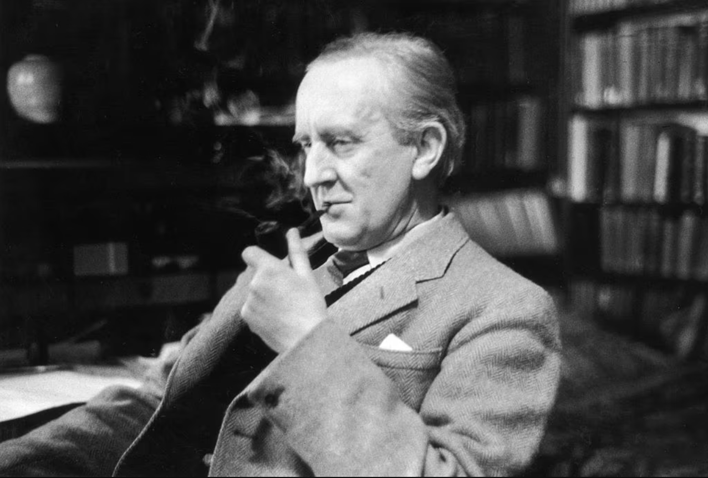

Homework 7
#Systems:
#Days:
Drift:
Sigma(volatility):
Stochastic Process:
Arithmetic Brownian
Geometric Brownian (Black–Scholes)
Ornstein–Uhlenbeck (mean-reverting)
Vasicek
Hull–White
Cox–Ingersoll–Ross
Black–Karasinski
The Most Beautiful Process
Simulate

"Not all those who wander are lost." - J.R.R. Tolkien